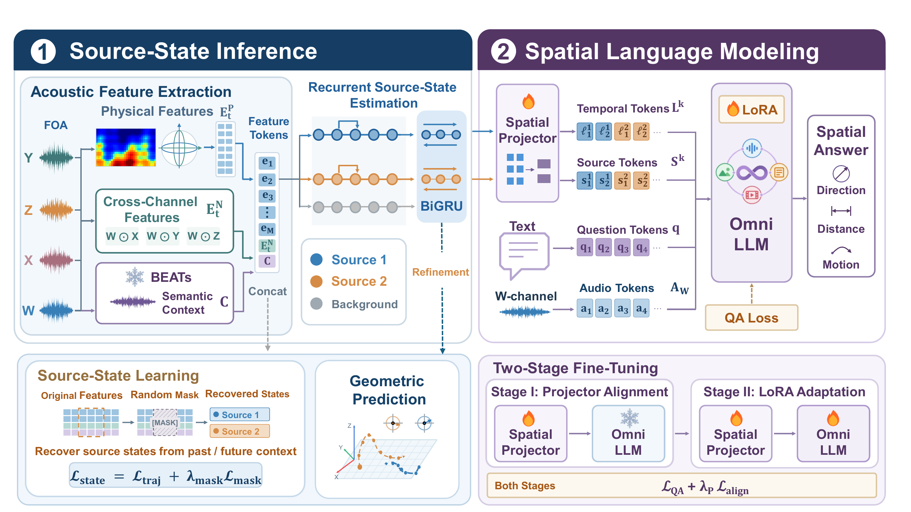
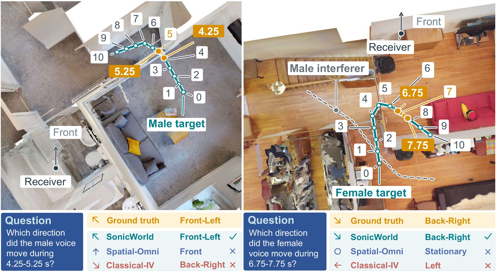

Multi-cue evidence
Combine physical spatial features, learned cross-channel waveform features, and a frozen-BEATs semantic summary.
Spatial audio & language
Source-Centric Latent Dynamics
for Spatial Audio Reasoning
Code and dataset will be released upon paper acceptance.
The idea
Dynamic spatial audio reasoning requires a model to associate changing acoustic observations with the correct source and recover its spatial state at a queried time or interval, a challenge intensified by overlapping speech and source motion. To study this problem, we introduce Sonic-Bench, comprising 2.8K first-order Ambisonics clips and 28.8K target-specific question-answer pairs across 480 simulated indoor scenes. The benchmark covers localization, distance estimation, and motion reasoning in single- and dual-source settings.
We further propose SonicWorld, which integrates physical, learned acoustic, and semantic features into persistent source states through learned transitions and recurrent updates, and projects them into an Omni LLM for spatial reasoning. Compared with Spatial-Omni on the Sonic-Bench test split, SonicWorld improves direction accuracy from 31.98% to 34.69% and reduces azimuth error from 57.22° to 48.01°. In zero-shot transfer to Spatial LibriSpeech, SonicWorld retains strong localization performance, achieving 72.39% direction accuracy and 20.88° azimuth error, compared with 9.36% and 94.22° for Spatial-Omni.
SonicWorld
Associate observations with individual sources, recover their geometry, and connect their temporal states to language.

Combine physical spatial features, learned cross-channel waveform features, and a frozen-BEATs semantic summary.
Learn transitions and recurrent updates for persistent source slots. Bidirectional refinement and masked-state recovery incorporate temporal context.
Project state sequences into local temporal and source-summary tokens, then align the projector and adapt the Omni LLM with LoRA.
Sonic-Bench
Ten-second first-order Ambisonics recordings paired with complete source trajectories and questions about a target voice.
Each recording has one designated target and two query times. Five questions per time probe its direction, azimuth, elevation, distance, and movement over the preceding one-second interval.
The scene-disjoint split contains 2,400 training clips from 400 scenes and 480 test clips from 80 scenes. Six source-motion configurations cover stationary and moving targets, with and without an interferer.
Experimental results
In-domain evaluation on Sonic-Bench and zero-shot transfer to SpatialSceneQA and Spatial LibriSpeech (SLS). SonicWorld and spatial baselines use Qwen2.5-Omni-7B; summary comparisons are against Spatial-Omni.
In-domain · 480 test clips
| Metric | Spatial-Omni | SonicWorld |
|---|---|---|
| Direction accuracy ↑ | 31.98% | 34.69% |
| Azimuth MAE ↓ | 57.22° | 48.01° |
Zero-shot · 622 selected clips
| Metric | Spatial-Omni | SonicWorld |
|---|---|---|
| Azimuth MAE ↓ | 84.03° | 49.35° |
| Elevation MAE ↓ | 30.63° | 23.12° |
Zero-shot · 8,512 selected clips
| Metric | Spatial-Omni | SonicWorld |
|---|---|---|
| Direction accuracy ↑ | 9.36% | 72.39% |
| Azimuth MAE ↓ | 94.22° | 20.88° |
Sonic-Bench: 160 single-source test clips, covering localization and movement reasoning.
Dir. and Mot. are accuracies (%); Az. and El. are MAE (°); Dist. is MAE (m). Bold indicates the best value in each metric.
Qualitative examples
Movement answers, decoded trajectories, and source-state continuity across speech pauses.

Orange marks the queried intervals. Source identity and temporal context distinguish the target's movement from that of another speaker.
@misc{wei2026sonicworld,
title = {SonicWorld: Source-Centric Latent Dynamics for
Spatial Audio Reasoning},
author = {Chenlong Wei and Hanling Wang and Mingjin Lou and
Yufan Shi and Yandong Sun and Sheldon Yu and
Xiaohui Zhu and Xiaobo Jin and Yiwei Wang},
year = {2026}
}